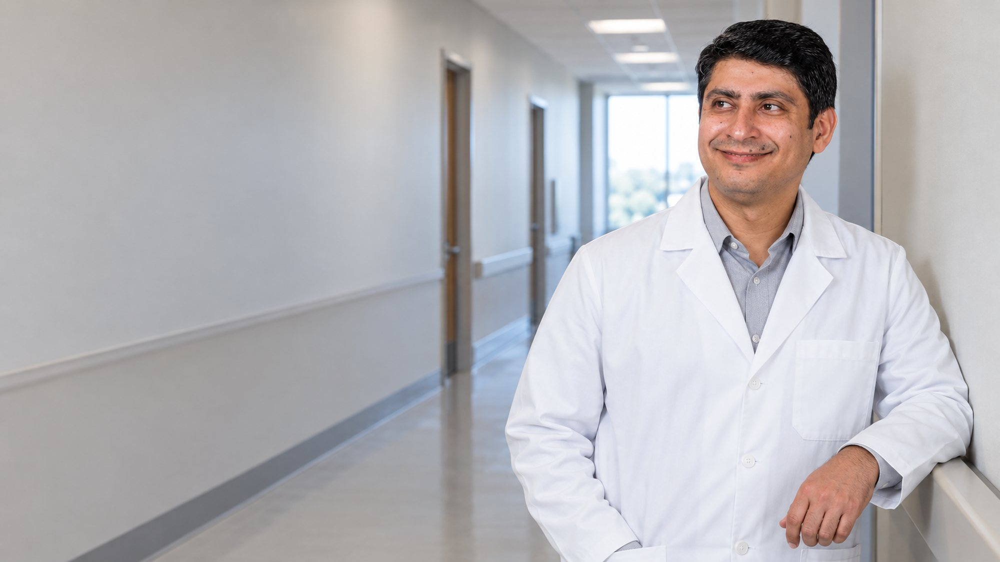
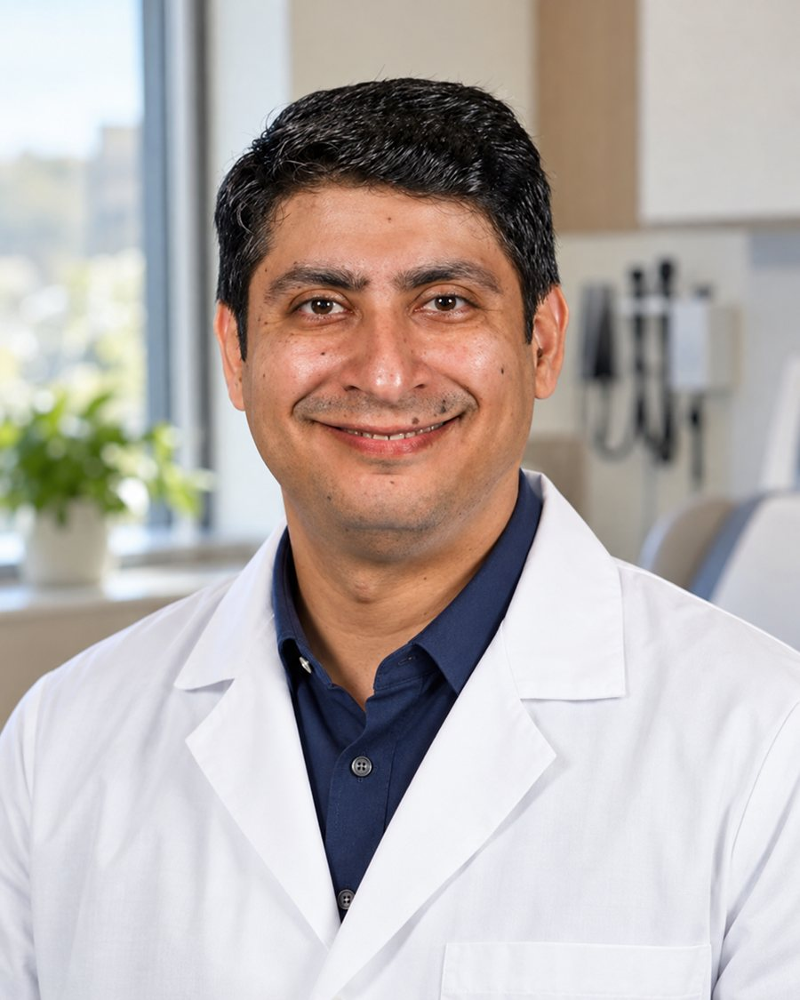
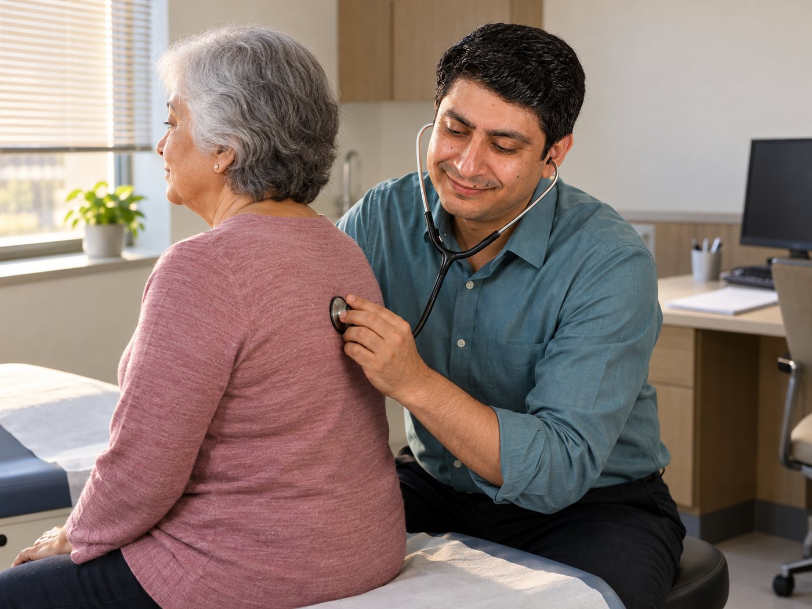
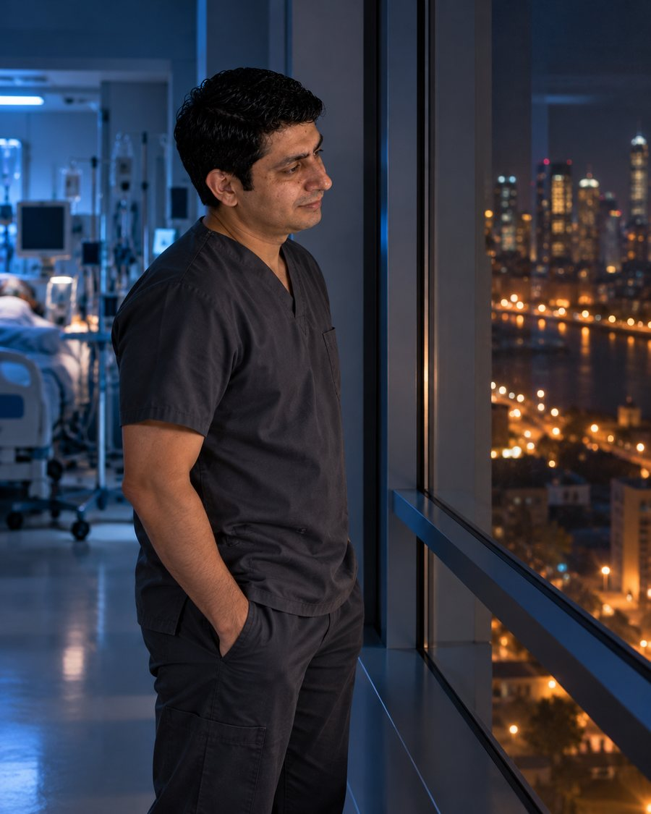
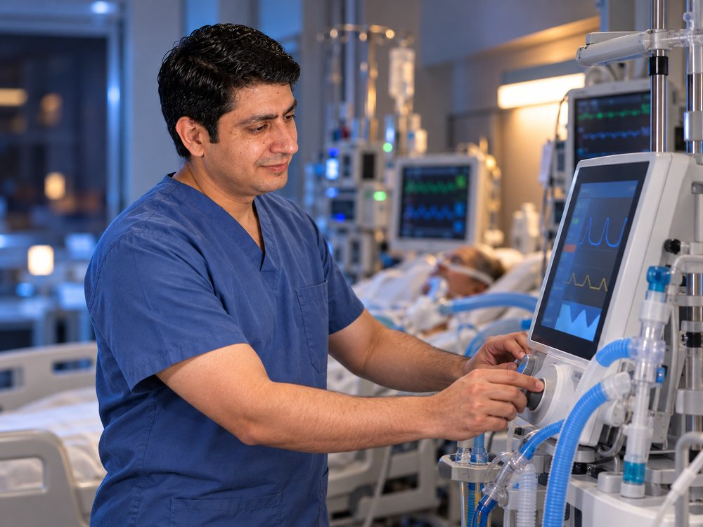
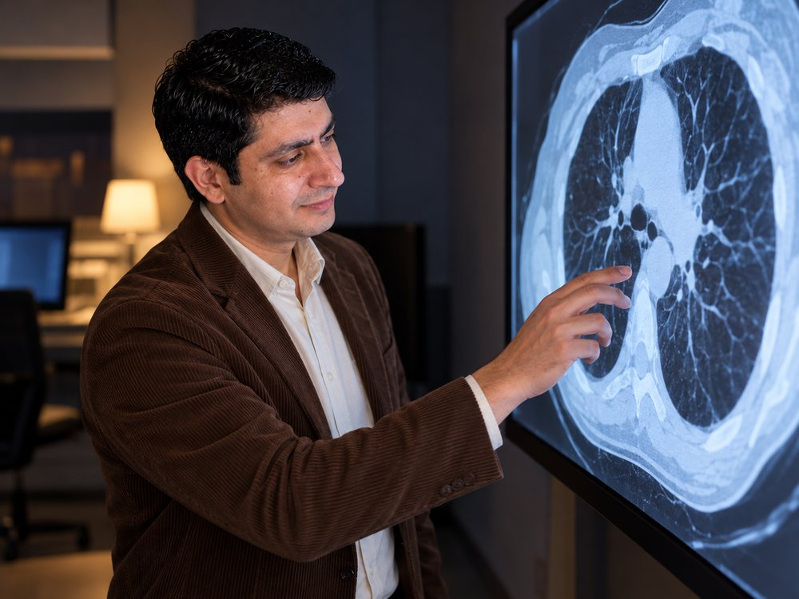
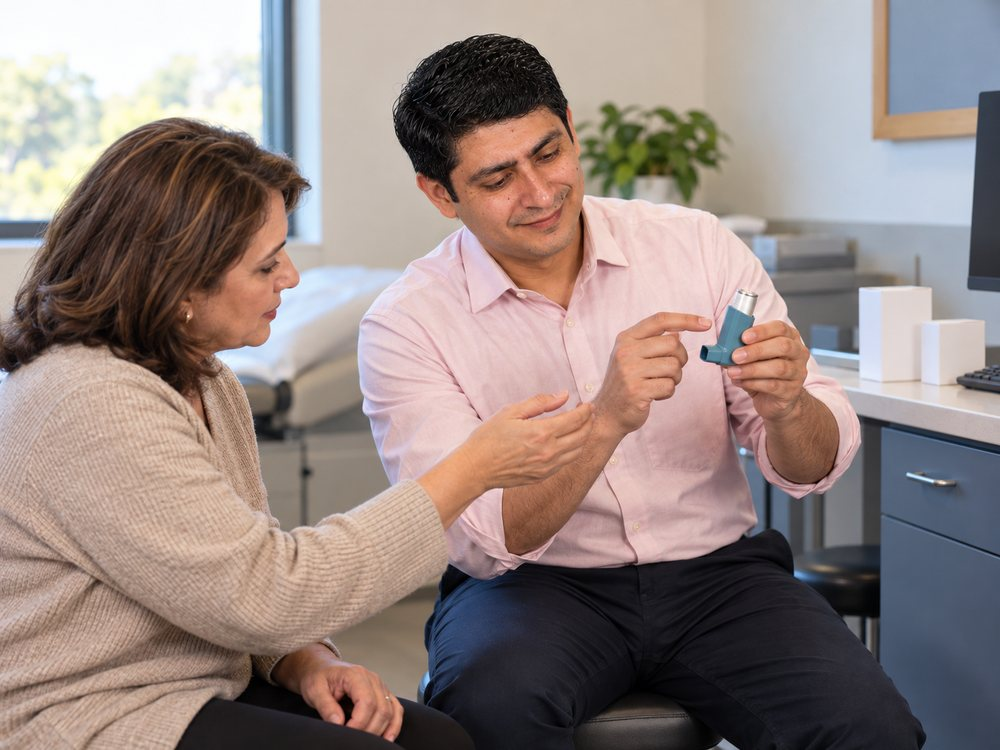
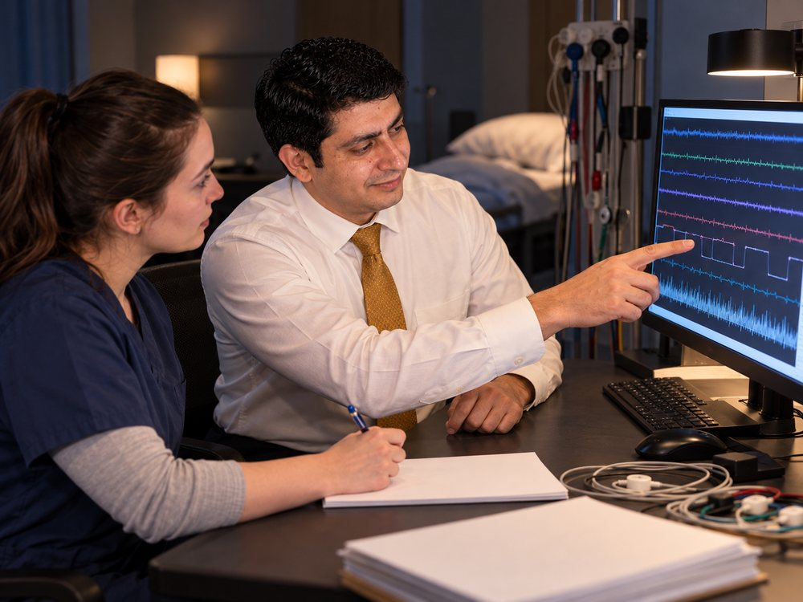
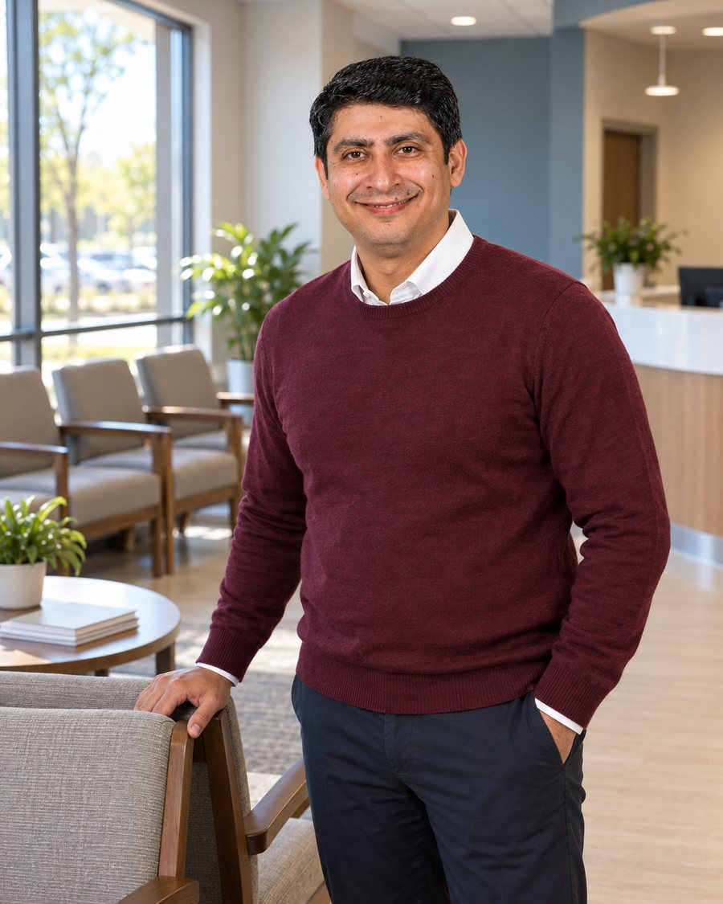
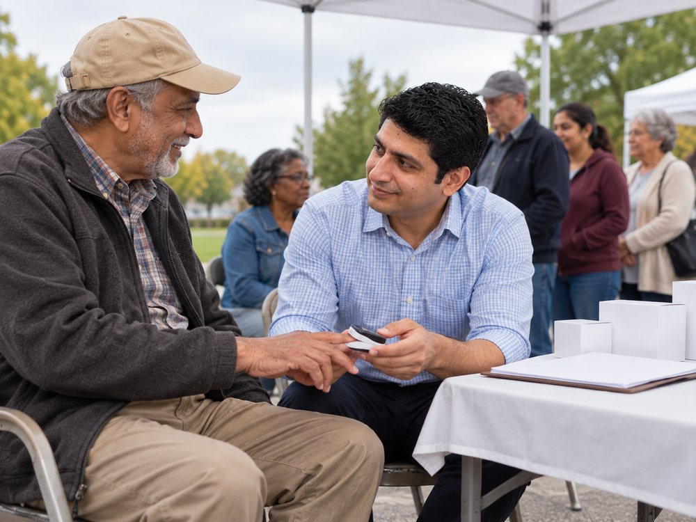

Asthma
Diagnosis, control and the slow work of finding what actually sets it off for one particular person.

Pulmonary and critical care · Flint, Michigan
A lung doctor who does not hand his patients over at the hospital door. Clinic, ward consult and intensive care unit, the same physician through all three.

The practice
Dr. Aashish Valvani is a pulmonary and critical care physician with Pulmonary Associates, PC, a specialist lung practice with offices in Flint and Grand Blanc, Michigan.
His week runs across all three settings a lung problem can land in. He sees patients in the office, he is called to consult on the wards, and he covers the intensive care unit, including patients whose critical care goes on for weeks. The same doctor is there at each stage, which is unusual and is the point.
He is board certified by the American Board of Internal Medicine in internal medicine, in pulmonary disease and in critical care medicine, and holds his Michigan licence since 2019.

Breathing problems rarely stay in one place. Neither does he.
What he treats
Diagnosis, control and the slow work of finding what actually sets it off for one particular person.
Long term care for chronic obstructive pulmonary disease, in the office and on the ward when it flares.
Sleep apnoea and related disorders, from the study itself through to living with the treatment.
Intensive care for patients whose lungs or whose whole system have failed, including prolonged critical illness.
The unit
Intensive care is where pulmonary medicine stops being a clinic specialty. Ventilators, failing organs, families who need the situation explained in plain words at an hour when nobody is at their best.
He covers that unit, and he also carries the patients who do not leave it quickly: the ones who need critical care for weeks rather than days, where progress is measured in small changes nobody outside the room would notice.






Training
He took his medical degree in Mumbai in 2005. His internal medicine training ran through the Institute of Medical Sciences at Banaras Hindu University in India and through New York Medical College at Metropolitan Hospital in Manhattan, which he completed in 2016.
He then spent three years in a pulmonary disease and critical care fellowship at Westchester Medical Center, the New York Medical College teaching hospital, before moving to Michigan.
He keeps current through the American Thoracic Society and the American College of Chest Physicians.
An assistant professor at Michigan State University, which in practice means the residents follow him round.
Teaching and hospitals
He holds an assistant professor appointment at Michigan State University and helps train younger physicians. Alongside the practice he consults at three hospitals across the Flint area.
Outside medicine he supports local temples and takes part in community health events, the kind where people who would never book an appointment will still let someone check them over at a folding table.
Gallery

Every picture of Dr. Valvani on this page is an AI-generated illustration, produced with his approval from a reference photograph. They are not photographs of real events.
Contact
For appointments at either office, call the practice directly. For anything else, the form reaches him.